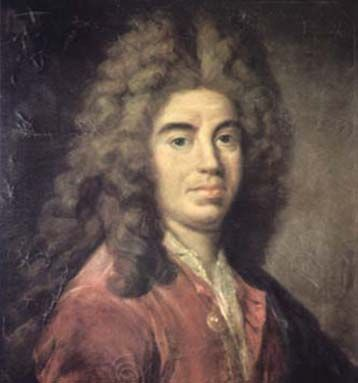

LA BRUYÈRE

.La Bruyère (1688-1896) là một trong những nhà văn vĩ đại nhất của nước Pháp. Một cuộc đời âm thầm và đầy nghi ngại, một tác phẩm lớn duy nhất, một “ga-lơ-ri” về những biếm họa của thời đại ông và của mọi thời đại, một dự án cải cách về phong cách sống và các mối quan hệ, một sự sâu sắc về tư duy thường gợi nhắc người ta nhớ đến Pascal, một cảm quan sắc bén về tính tương đối, một cặp mắt chăm chú: Tất cả những cái đó đều quá mạnh, quá khó chịu, quá chi ly làm người ta có nguy cơ nhận ra mình trong đó. Les Caractères (“Những Tính Cách” hay “Các Con Chữ” tùy ta hiểu - ND) chính là một luận văn phê bình xã hội hiện đại.
Những nhà văn Pháp này đều như thế, dẫu tên của họ là gì. Molière, Sévigné, La Fontaine, La Rochefoucauld, La Bruyère, Racine, Boileau, Vauvenargues, Voltaire, Sade, và muộn hơn là Céline, Genet… Người ta nói đến một phong cảnh, với những thung lũng, những cánh đồng cỏ, những con sông, cây cối, những hố sâu của bóng tối, những khoảng rừng thưa, những bông hoa. La Bruyère có ở đấy, phía bên trái, giống như một bụi cây rì rào bất an. Những tính cách ư? Phải rồi, theo nghĩa Hy Lạp thì đấy là sự khắc họa, là in ấn. Từ này mang một ý nghĩa sinh học, thần học, tâm lý học và cả mẫu chữ in ấn nữa. Mắt là một phần của chữ hiện ra do in ấn, làm người ta đụng đến vật liệu thần kinh của sự thuyết giảng. Chẳng phải ngẫu nhiên mà chương đầu của tác phẩm Les Caractères mang tiêu đề “Những sản phẩm của trí tuệ” và chương cuối cùng “Những trí lực mạnh mẽ”. Người ta bắt đầu với những suy ngẫm về nghệ thuật ngôn từ, và kết thúc bằng việc khơi dậy lại sức bật của thượng đế vốn thông thường có khuynh hướng bỏ quên nghĩa vụ. (Và người ta biết rằng La Bruyère, đối với các ngài giáo sư, đã mang tiếng xấu, vì ông thuộc về cánh Bossuet).
“Với đầu óc sắc bén, cái rất hiếm hoi trên thế gian này, đấy là những viên kim cương và ngọc trai”. Đấy là cái văn phong “nhanh hoạt, chuẩn xác, kích động”, cái cách “sử dụng ngôn từ hoàn toàn mới mẻ” (lời của Voltaire đã nói ra) trong khi hoàn thành một cuộc cách mạng mà từ “Ánh sáng” là biểu trưng của nó (Montesquieu, độc giả của La Bruyère). Tác phẩm Les Caractères lập tức có một công chúng độc giả rộng lớn và cũng đầy những sự ghen tị. Cũng theo Voltaire, “những ẩn dụ người ta thấy đầy rẫy trong cuốn sách làm cho nó thành công”. Nhưng “chìa khóa” là gì: Chắc hẳn rằng có đấy và thiên hạ tùy theo địa vị của mình mà nhìn nhận, nhưng những chiếc thìa khóa này là những hình mẫu được cố định và còn có thể áp dụng cho những mẫu người của thời đại chúng ta. Bạn hãy đọc mà xem: “Có những tâm hồn bẩn thỉu, đầy bùn nhơ và cặn bã, những kẻ chả phải là cha là mẹ, chả là bầu bạn, chả là công dân, chả phải tín đồ Thiên chúa giáo, mà có lẽ cũng chả phải là người: Họ có đầy tiền”. Hoặc nữa: “Khi nhìn nhận người phụ nữ này bằng sắc đẹp cô ta, tuổi trẻ cô ta, sự kiêu căng và thói đỏng đảnh của cô ta, thì không có ai nghi ngờ rằng một ngày nào đó thế nào cũng có một anh chàng say mê cô ả. Sự chọn lựa của tôi đã rõ: Đấy là một con quái vật chẳng có đầu óc”. Và cứ thế, cứ thế…
Điều lạ lùng nhất là La Bruyère lại rất hiện đại do một sự hồi cố về các tác giả Hy Lạp và La Tinh, và rằng trong cuộc tranh cãi nổi tiếng giữa những bậc cổ điển và kẻ hiện đại, thì chính các vị tiền bối lại làm cuộc lật đổ trong khi những người “hiện đại”, những kẻ rập khuôn theo thời đại mình, lại nhạt nhẽo, rối rắm, đạo đức giả, khoa trương. Quả là một mở đầu dữ dội đầy kinh ngạc mà La Bruyère đã viết ra trong diễn văn khi ông nhậm chức viện sĩ hàn lâm của Pháp. Ông đã gây ra một vụ xì-căng-đan khi bảo vệ những bạn bè mình: La Fontaine, Boileau, Bossuet, Fénelon, Racine. Và từ đó, ông tố cáo cái gian đảng của những tín đồ mà bao giờ cũng có sẵn: “Tôi không hề có một chút nghi ngờ gì rằng công chúng sẽ không chán chường và mệt mỏi để nghe, từ mấy năm nay, về những con quạ già nua kêu quàng quạc quanh những người mà, từ đôi cánh tự do và một ngòi bút thanh thoát, đã đạt tới một vinh quang nào đó bằng văn phẩm của mình (…). Văn xuôi, văn vần, tất cả đều là mồi săn của sự hiềm tị khôn nguôi của những kẻ được coi là chống lại người nào dám xuất hiện trong sự toàn bích nào đó và được công chúng thừa nhận”.
Đấy là điểm chủ yếu: Cái mà những quan chức văn học hay trí thức không chịu ủng hộ, trong sự tầm thường “thiếu sức mạnh và hơi thở” của nó, là cái hoàn hảo đến thẳng với công chúng, và vì thế thường có một liên minh tự nhiên giữa tài năng và dân tộc. Người ta đã hết sức thích thú với Những người tỉnh lẻ, Truyện ngụ ngôn, Những tính cách và cả Tartuffe hayPhèdre. Dù cho một nhà báo hay một viện sĩ có giận dữ đến xùi bọt mép để phủ nhận thì cũng chả làm điều gì được. Tác phẩm Les Caractères, trước hết, không ai nghi ngờ rằng là một cỗ máy chiến tranh chống lại sự mù quáng của dư luận và cái bậu sậu tạo ra nó: “Điều đi ngược lại với những lời xì xào về những sự việc hay những con người thường là sự thật”. Hay nữa: “Cần phải làm như những người khác: câu phương ngôn hầu như lúc nào cũng đáng nghi ngờ”. Hoặc giả: “Chỉ dần dà thôi, và còn bị thúc bách bởi thời đại và hoàn cảnh, mà những đức hạnh hoàn hảo và những thói xấu lan tràn cuối cùng mới tự bộc lộ ra”.
Cần lưu ý, La Bruyère nói rằng không hề có một phán quyết tối hậu, nó chỉ mang tính “hình thức” mà không phải là cái gì khác. Cũng đừng mong thoát khỏi, trong nghệ thuật, với cái thớ thịt chằng chịt bí hiểm của nó, sự phán xét đối với chúng ta: “Trong nghệ thuật có một điểm hoàn bích giống như cái thiện và sự chín muồi của thế giới tự nhiên. Những ai cảm thấy nó và yêu mến nó thì có được cái “gu” hoàn thiện, những ai không cảm thấy, không đầy đủ hay quá mức, thì cái “gu” khiếm khuyết. Bởi thế có một thứ “gu” tốt và thứ “gu” xấu, và người ta cãi nhau về nó một cách có căn cứ”. Việc không có “gu” như người ta thấy, có việc đi lướt qua bên cạnh một điểm. Sự ngu dại bản thân nó là một vấn đề tự động. “Kẻ ngu dốt là người máy”. Hài kịch xã hội là một sự mộng du, một vở kịch múa rối, đáng cười hơn là đáng khóc, bởi vì “sự bất an, sợ hãi, chán nản không xa rời cái chết mà ngược lại”.
Sức mạnh của văn chương: Nhờ vào một sự chuẩn xác nhất định về biểu tả, người ta ghi tên mình vào tâm điểm của nguyên lý về mâu thuẫn. Chính vì vậy mà La Bruyère đã không phải ít vui thích khi thấy mình được Lautréamont lặp lại. La Bruyère viết: “Tất cả đã được nói ra, và người ta đã đến quá muộn kể từ hơn bảy ngàn năm khi đã có những con người và họ suy nghĩ. Người ta chỉ việc đi cóp nhặt theo chân những bậc cổ đại và sự khéo léo trong những người hiện đại”. Còn Lautréamont (trong cuốn Các vần Thơ) viết: “Chưa có gì được nói ra. Người ta đến quá sớm kể từ hơn bảy ngàn năm khi đã có những người… Chúng ta có lợi thế làm việc theo gương những người cổ đại và sự khéo léo trong những người hiện đại”. Tất cả đã được nói ra. Mà cũng chưa có gì được nói ra. Riêng cái việc “nói” tự nó đã mở cánh cửa của thời gian.
Jouhandeau, trong lời nói đầu tinh tế của cuốn Les Caractères được tái bản, đã đi đến mức so sánh La Bruyère với Nietzsche. Ông đã đưa ra làm bằng chứng đoạn văn sau đây: “Có những con người có thể trở nên đặc biệt: Họ lướt đi, dương buồm trên một biển cả, nơi mà những kẻ khác thất bại và đắm thuyền; họ thành đạt bằng việc làm thương tổn đến mọi nguyên tắc của sự thành đạt; họ lấy ra từ cái bất bình thường và cái điên rồ của họ tất cả mọi thành quả của một sự khôn ngoan được tiêu thụ nhiều nhất; họ tự nâng mình lên bởi một sự vi phạm không ngừng đến cái mức nghiêm trang của phẩm giá; và cuối cùng họ kết thúc và gặp gỡ một tương lai mà họ đã không hề thấy mà cũng không hề mong mỏi. Cái còn lại đối với họ trên trái đất này, ấy là tấm gương soi của số mệnh họ, thật chết người đối với những ai muốn theo đuổi cái số mệnh đó”.
Người ta có thể đọc đi đọc lại đoạn văn này. Nó chẳng bao giờ là cũ cả.